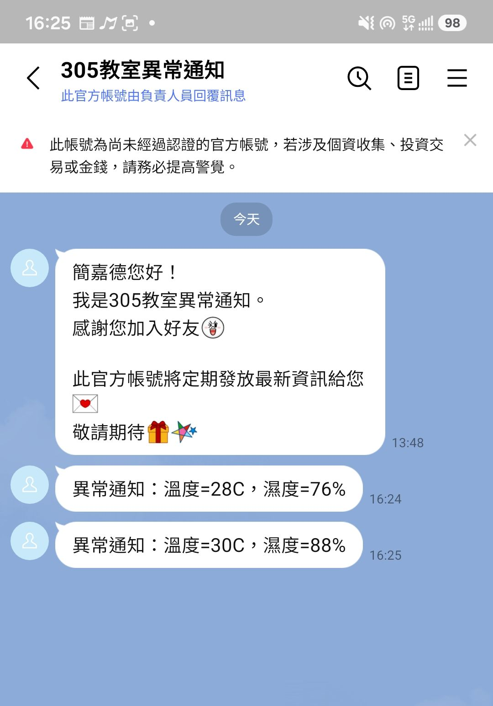

01
⌁
Sense
DHT11 / DHT22 讀取溫度與濕度，交給 ESP32 處理。
sensor.read()OPEN HARDWARE / 2026
ESP32 × MQTT × 2.9 吋電子紙。從感測器讀取溫濕度，經由網路傳送，最後在低功耗的顯示器上留下清楚、可讀的狀態。

這是一個以 ESP32 為核心的實驗型 IoT 專案：讀取 DHT11 / DHT22 感測資料，透過 MQTT 發布，再以 Waveshare 2.9 吋電子紙呈現。
電子紙只在內容變更時更新，讓資訊保持可見，同時降低耗電與視覺噪音。
DHT11 / DHT22 讀取溫度與濕度，交給 ESP32 處理。
sensor.read()透過 Wi-Fi 連接 MQTT Broker，發布即時感測主題。
mqtt.publish(topic)在 2.9 吋 e-Paper 上更新狀態、數值與自訂圖像。
display.refresh()以下內容整理自 2026/09/14 物聯網成果報告與成果照片。最新主系統與早期開發歷程分開呈現，讓每張照片的證據範圍清楚可讀。

LATEST SYSTEM · 2026/09/14
ESP32 讀取 DHT11 與光敏電阻，將即時值、Gauge、最近資料折線與 Wi-Fi／MQTT 狀態分頁呈現在 ILI9225。畫面可直接確認當下的感測與顯示成果；發布週期、斷線重連與三組控制則保留為後續重測項目。


SCREEN ONLY · CROPPED RESULTS
將成果照片裁切為只保留顯示器畫面，移除麵包板、ESP32 與接線，方便直接閱讀畫面設計與量測結果。


DEVELOPMENT HISTORY
OLED 階段先驗證感測器接線、讀值與基本顯示；ILI9225 則將多項數值、趨勢與狀態整合成適合現場展示的畫面。兩者是不同階段的證據，不視為同一版韌體同時完成。

小尺寸、低負擔，適合先確認 DHT11／LDR 與畫面更新。

畫面可見 god/class305/data 與 temp、humi、light 結構化訊息。

ESP32、DHT11、光敏電阻、顯示器與控制輸出組成可操作的實驗平台。
DISPLAY CHOICE
不是單純的新舊替代，而是快速驗證與完整展示之間的取捨。

曾展示時間、溫度、濕度與亮度欄位；是否整合於最新版本需重新驗證。

保留量測曲線的開發歷程證據，不延伸推論為最新主系統功能。

曾完成超標通知展示；正式部署前應重新建立秘密設定與測試。
READY WHEN YOU ARE
準備 ESP32、DHT 感測器與 Waveshare 電子紙，然後從範例開始。詳細的腳位、函式庫與 MQTT 設定都整理在專案文件中。
查看硬體設定 ↗